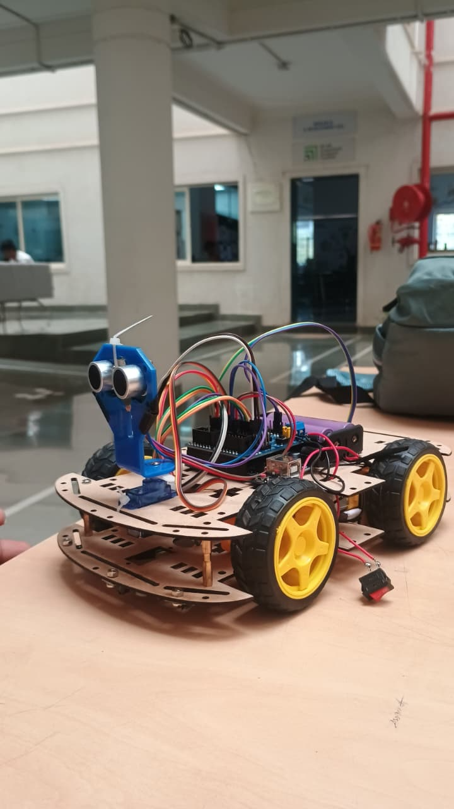

Started Engineering
Began B.Tech. AIML at MIT Academy of Engineering, Pune, with a focus on building strong fundamentals in technology and problem solving.
Hey there 👋, I'm
First Year Engineering Student — AIML
MIT Academy of Engineering • Exploring Automation, Web Tools & Engineering Systems
I am a first-year B.Tech AIML engineering student with a strong interest in technology, artificial intelligence, and software development. I am passionate about building innovative web-based tools and student-focused solutions that solve real-world problems. Currently, I am exploring web development, data-driven systems, and the fundamentals of machine learning.
Currently Studying
B.Tech. AIML Engineering
MIT Academy of Engineering, Pune
2025 – 2029Building a strong foundation in engineering, programming, web development, and artificial intelligence as a first-year AIML student at MIT Academy of Engineering.
Working toward becoming a practical AI and software builder who can create useful digital tools for students, learning, automation, and real-world problem solving.
Strengthening Python, frontend development, data thinking, and project documentation through coursework, certifications, experiments, and consistent portfolio building.
Began B.Tech. AIML at MIT Academy of Engineering, Pune, with a focus on building strong fundamentals in technology and problem solving.
Practiced the basics of webpage structure, styling, responsive layouts, and clean visual presentation for academic portfolio work.
Created this digital portfolio to organize personal background, skills, certifications, projects, and learning progress in one professional space.
Completed beginner Python learning through structured coursework, covering variables, control flow, functions, modules, and OOP basics.
Experimenting with AI tools, prompt writing, automation ideas, and web-based solutions that can support student learning and daily productivity.
Creative Technology for me means using engineering, artificial intelligence, and modern software tools to build innovative solutions for real-world challenges. It is about combining logical problem-solving with creative thinking to create systems that are smart, efficient, and impactful.
Using machine learning concepts and intelligent systems to build tools that can automate decisions, analyze data, and improve user experiences.
Developing browser-based tools and applications that solve student and real-world problems with accessibility, speed, and ease of use.
Transforming raw data into meaningful insights and structured systems that support better decisions and efficient workflows.
Designed and developed a responsive portfolio to present academic background, technical interests, skills, certifications, and learning progress in one organized digital space.
Exploring AI concepts through beginner-friendly experiments, prompt practice, Python fundamentals, and responsible use of intelligent tools for academic productivity.
Coursework and practice tasks focused on programming logic, engineering fundamentals, communication, documentation, and structured problem-solving habits.
AIML Engineering Student & Tech Builder
MITAOE, Pune · 2025–2029
Python Institute · via Cisco Networking Academy · MITAOE, Pune
Covered core Python programming — variables, data types, control flow, functions, and basic OOP. Offered through the Cisco Networking Academy program at MIT Academy of Engineering.
Python Institute · via Cisco Networking Academy · MITAOE, Pune
Advanced Python concepts including modules, packages, exceptions, file I/O, and deeper OOP principles. Builds directly on PE1 to give a complete, professional-level Python programming foundation.
Anthropic
Introductory course on working with Claude — covering effective prompting, AI interaction principles, and how to get the most out of large language models for real-world tasks.
Anthropic · UCC · Ringling College · HEA · National Forum
Core framework for understanding AI systems — how they work, their capabilities and limitations, ethical considerations, and a structured approach to applying AI responsibly across domains.
Anthropic · UCC · Ringling College · HEA · National Forum
Tailored AI fluency program for students — how to use AI tools effectively in academic and learning contexts, understanding AI-generated content, and building critical thinking around AI use.
Anthropic · GivingTuesday
Specialized AI fluency module for nonprofit and social impact contexts — practical AI applications for mission-driven work, responsible use, and leveraging AI for community benefit.
Started the B.Tech AIML journey at MITAOE with a clear focus on programming fundamentals, engineering thinking, and consistent technical growth.
Completed structured Python learning through Cisco Networking Academy courses, covering core programming, functions, modules, file handling, and OOP basics.
Built early fluency in AI tools, responsible AI use, prompting, and student-focused applications through guided learning programs.
"Omraj shows steady curiosity in technical learning and is willing to improve through practice, feedback, and consistent effort."
"He communicates ideas clearly during group tasks and takes responsibility for organizing work in a simple, structured way."
"His portfolio reflects an early but focused interest in AI, web tools, and practical project-based learning."

Robotics PrototypeAn autonomous robot using IR sensors to detect and follow path lines with real-time directional correction using Arduino and motor drivers.
Built an intelligent obstacle-avoidance robot using ultrasonic sensors and Arduino for autonomous movement and collision detection.
A browser-based student utility platform containing productivity tools, academic helpers, and smart student-focused utilities.
A concept interface for tracking AI learning progress, certifications, coding milestones, and technical growth.
Have a project idea, collaboration proposal, or just want to connect? Feel free to drop a message!